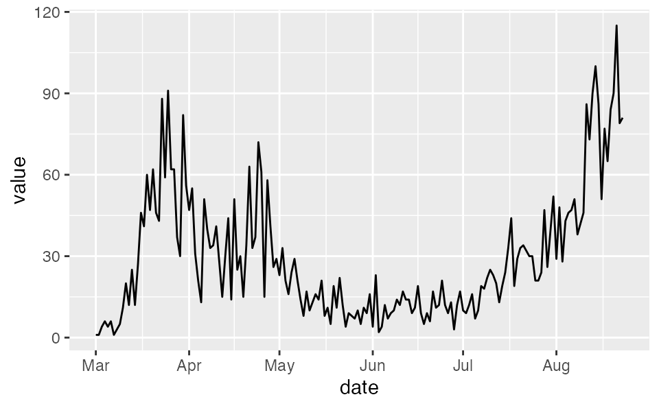
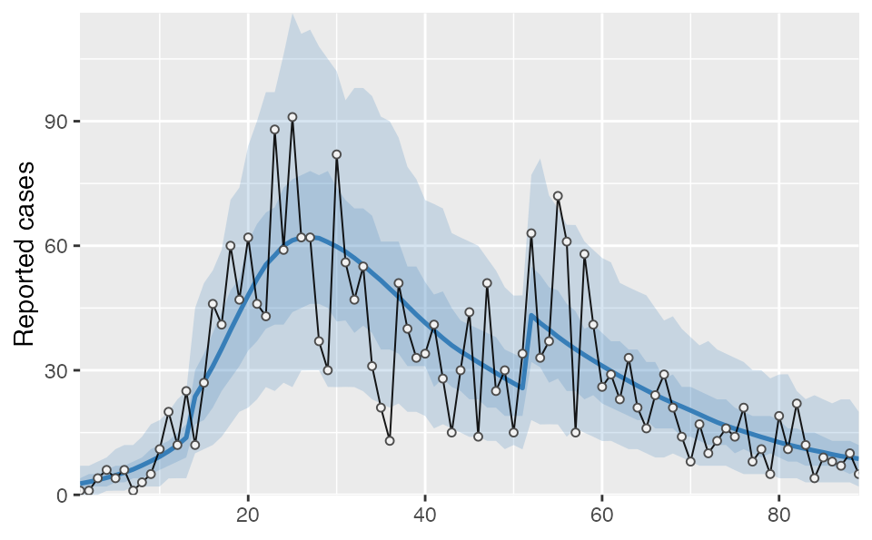
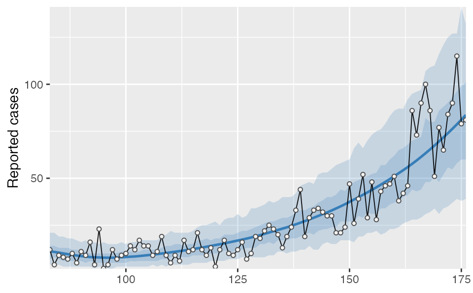
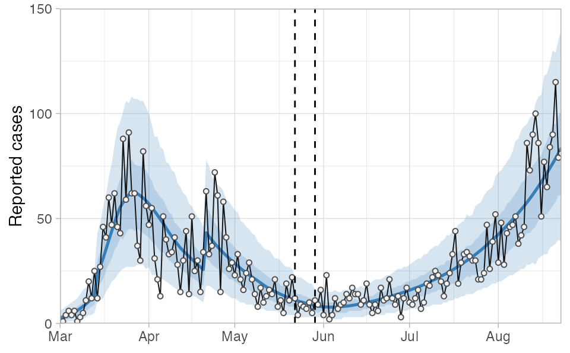

restarting.RmdWith longer time series, you may wish to split the model fitting into “blocks” for speed. This approach will let you fit a model once for the time series until a recent date (say a couple months ago), and then focus on fitting the more recent data separately, perhaps with full MCMC sampling given that the fitting will be considerably faster.
The following is an example of splitting the dataset in late May. You can split the data wherever and as frequently as you want providing the following is true:
You must also be OK with various otherwise fixed parameters (phi, R0, e, i0) being allowed to vary across blocks. The posterior from the fit will be used as the prior for the next. This means the information from the first block will be preserved, but the next block posterior may be different from the previous when additional data are added. Visually, the most obvious effect might be the NB2 dispersion parameter phi: the credible intervals may appear smaller or wider in different splits. One approach to deal with this is to allow for some overlap (say a week) between two fits and then average across them, as is done in the following example.
First, we will read in the British Columbia, Canada COVID-19 reported-case data. This comes from http://www.bccdc.ca/Health-Info-Site/Documents/BCCDC_COVID19_Dashboard_Case_Details.csv.
dat <- structure(list(value = c(1, 1, 4, 6, 4, 6, 1, 3, 5, 11, 20, 12,
25, 12, 27, 46, 41, 60, 47, 62, 46, 43, 88, 59, 91, 62, 62, 37,
30, 82, 56, 47, 55, 31, 21, 13, 51, 40, 33, 34, 41, 28, 15, 30,
44, 14, 51, 25, 30, 15, 34, 63, 33, 37, 72, 61, 15, 58, 41, 26,
29, 23, 33, 21, 16, 24, 29, 21, 14, 8, 17, 10, 13, 16, 14, 21,
8, 11, 5, 19, 11, 22, 12, 4, 9, 8, 7, 10, 5, 11, 9, 16, 4, 23,
2, 4, 12, 7, 9, 10, 14, 12, 17, 14, 14, 9, 11, 19, 9, 5, 9, 6,
17, 11, 12, 21, 12, 9, 13, 3, 12, 17, 10, 9, 12, 16, 7, 10, 19,
18, 22, 25, 23, 20, 13, 19, 24, 33, 44, 19, 29, 33, 34, 32, 30,
30, 21, 21, 24, 47, 26, 39, 52, 29, 48, 28, 43, 46, 47, 51, 38,
42, 46, 86, 73, 90, 100, 86, 51, 77, 65, 84, 90, 115, 79, 81),
day = 1:176), row.names = c(NA, -176L),
class = "data.frame")
dat <- dplyr::as_tibble(dat)
dat$date <- ymd("2020-03-01") + dat$day - 1
See the ‘fitting-case-data’ vignette for details on the model setup. Here, we will use the same initial code blocks.
# Based on estimation with hospital data in other model:
samp_frac <- c(rep(0.14, 13), rep(0.21, 38))
samp_frac <- c(samp_frac, rep(0.37, nrow(dat) - length(samp_frac)))First, let’s split the data into two blocks with a week overlap in the middle. Note that f is assumed constant in the 30 days prior. You could also avoid the overlap if you would prefer.
dat1 <- filter(dat, date < ymd("2020-05-29"))
dat2 <- filter(dat, date >= ymd("2020-05-22"))
samp_frac1 <- samp_frac[seq_len(nrow(dat1))]
samp_frac2 <- samp_frac[dat2$day]
f_seg1 <- f_seg[seq_len(nrow(dat1))]
f_seg2 <- f_seg[dat2$day]Now we need to adjust the f_seg indexes to start at 1 in the second block and set the first element to 0:
f_seg2 <- f_seg2 - min(f_seg2) + 1
f_seg2[1] <- 0
f_seg2
#> [1] 0 1 1 1 1 1 1 1 1 1 2 2 2 2 2 2 2 2 2 2 2 2 2 2 2 2 2 2 2 2 2 2 2 2 2 2 2 2
#> [39] 2 2 2 2 2 2 2 2 2 2 2 2 2 2 2 2 2 2 2 2 2 2 2 2 2 2 2 2 2 2 2 2 2 2 2 2 2 2
#> [77] 2 2 2 2 2 2 2 2 2 2 2 2 2 2 2 2 2 2Fit the first model:
fit1 <- fit_seir(
daily_cases = dat1$value,
samp_frac_fixed = samp_frac1,
f_seg = f_seg1,
i0_prior = c(log(8), 1),
e_prior = c(0.8, 0.05),
start_decline_prior = c(log(15), 0.1),
end_decline_prior = c(log(22), 0.1),
f_prior = cbind(c(0.4, 0.5), c(0.2, 0.2)),
R0_prior = c(log(2.6), 0.2),
N_pop = 5.1e6, # BC population
iter = 200,
fit_type = "optimizing" # for speed only
)
#> Finding the MAP estimate.Use the function covidseir::post2prior() to convert the posteriors to the priors. The output is a named list:
priors <- post2prior(fit1, iter = seq_len(50))
priors
#> $R0
#> [1] 1.15693778 0.07827417
#>
#> $i0
#> [1] 6.448225 0.178044
#>
#> $e
#> [1] 0.80952971 0.04981957
#>
#> $phi
#> [1] 2.0228785 0.2099876
#>
#> $f
#> [1] 0.3325996 0.0790145
#>
#> $start_decline
#> [1] 0.0 0.1
#>
#> $end_decline
#> [1] 0.0 0.1
#>
#> $state_0
#> E1_frac E2_frac I_frac Q_num R_num E1d_frac
#> 0.7736256 0.1539390 0.6359192 21.6524384 2020.5355935 0.3779521
#> E2d_frac Id_frac Qd_num Rd_num
#> 0.0805407 0.4089279 69.7881628 7994.2094979Now we will fit the second model. Critically, note that we need to set use_ramp = FALSE to avoid using the initial social distancing ramp. The start_decline_prior and end_decline_prior are given fake priors that are close to 1 and easy to sample from. They can be ignored in the output.
fit2 <- fit_seir(
daily_cases = dat2$value,
samp_frac_fixed = samp_frac2,
f_seg = f_seg2,
i0_prior = priors$i0,
e_prior = priors$e,
start_decline_prior = priors$start_decline,
end_decline_prior = priors$end_decline,
state_0 = priors$state_0,
pars = c(D = 5, k1 = 1/5, k2 = 1, q = 0.05, ud = 0.1, ur = 0.02, f0 = priors$f[1]),
f_prior = cbind(c(0.6, 0.6), c(0.2, 0.2)), # or use priors$f to use the last f segment posterior
R0_prior = priors$R0,
use_ramp = FALSE, # CRITICAL for restarting!
N_pop = 5.1e6, # BC population
iter = 200,
fit_type = "optimizing", # for speed only
phi_prior = priors$phi
)
#> Finding the MAP estimate.Since we need to average over the overlap, we will combine the posteriors before turning them into a data frame with quantiles:
proj1 <- project_seir(fit1, iter = seq_len(50))
proj2 <- project_seir(fit2, iter = seq_len(50))
proj2$day <- proj2$day + min(dat2$day) - 1These are the fits from the two models:
proj1 %>% tidy_seir() %>% plot_projection(dat1)
proj2 %>% tidy_seir() %>% plot_projection(dat2)
Now we can bind the two projections together, convert them into quantiles, join on our day-date lookup table (lut), and plot the result. The vertical dashed lines indicate the region of overlapping/split model fits.
tidy_proj_combined <- bind_rows(proj1, proj2) %>%
tidy_seir(resample_y_rep = 50) %>%
left_join(lut, by = "day")
tidy_proj_combined %>%
plot_projection(obs_dat = dat,
value_column = "value", date_column = "date") +
geom_vline(xintercept = ymd("2020-05-22"), lty = 2) +
geom_vline(xintercept = ymd("2020-05-29"), lty = 2) +
theme_light() +
theme(axis.title.x = element_blank()) +
coord_cartesian(ylim = c(0, 150), expand = FALSE)
#> Coordinate system already present. Adding new coordinate system, which will replace the existing one.
In this example you will notice that phi is estimated as larger (less dispersion) in the second block compared to the first, resulting in slightly smaller credible intervals than we would have had with a single fit: